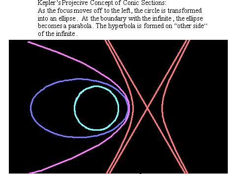
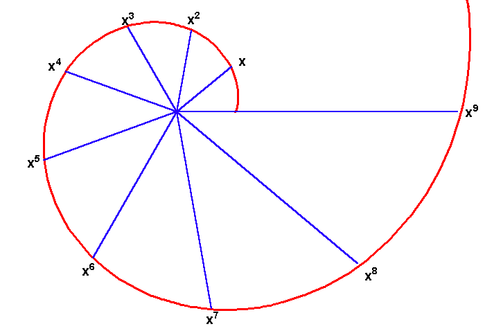
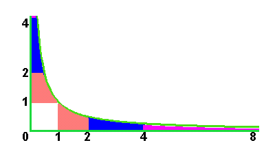
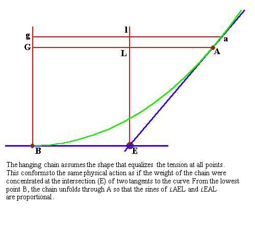
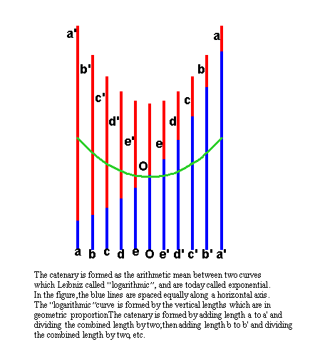
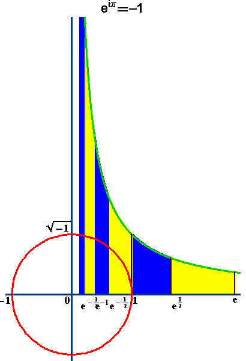

{kind=link}
{kind=link}
{kind=link}
Figure 4a

RIEMANN FOR ANTI-DUMMIES PART 37
THE DOMAIN OF POSSIBILITY
Plato, speaking in the Laws through the voice of an Athenian stranger, holds it indispensable for leaders of society to possess elaborate knowledge of arithmetic, astronomy and the mensuration of lines, surfaces and solids. He also considers it a disgrace for any common man to lack a basic understanding of these same subjects.
It is altogether fitting that these words should issue from someone far from home, for, as Helga Zepp-LaRouche so artfully demonstrated in her presentation to the ICLC Labor Day Conference, by the time of Plato's writing ,Athenian culture had estranged itself from these concerns and embarked on that chain of events which led to the disastrous Peloponnesian Wars. It is further fitting that Plato speaks here as a stranger, as all three subjects share a common focus on the exploration of those universal principles that govern, but don't reside, in the domain of objects and sense perception. To one trapped in the domain of the senses, those principles appear to come from some foreign land "over the horizon", or, "beyond the finite" . But, to one willing to ascend to its not too distant shores, that place is the province from which come the common principles, that make possible such diverse discoveries, as the founding ideas of the American Republic, the Gauss-Riemann concept of the complex domain and Beethoven's late string quartets.
The Universe is a wondrous, but not a strange place. As Nicholas of Cusa and G.W. Leibniz repeatedly emphasized, nothing exists or happens in the Universe that is not possible. It is the province of science, therefore, to discover what makes things possible. In so doing, the mind discovers not only the possibility of a particular thing, but it also discovers, and changes, the possibility of what it can discover about what is possible. Hence, Plato's emphasis on the study of the above mentioned subjects. It is both a means to discover what makes these things possible and a pathway for the mind to discover how it is possible for it to discover what is possible, thereby increasing its power.
Proceed through the example of the mensuration of the line, surface and solid. As presented in earlier locations, each object is made possible by a principle that possess the power to produce it. The power to generate the line is different, and incommensurable with, the power that generates a square, which, in turn, is different and incommensurable with, the power to generate a solid. This, in itself, is a crucial discovery. But, the more important discovery comes when the next question is posed. Since all three distinct powers exist in the one Universe, what is it about the Universe that makes possible these three distinct powers?
The answer to this type of question does not lie in the particular nature of each discovery, but in the paradox that one universe produces all three. As Cusa put it in "On Learned Ignorance":
"All our wisest and most divine teachers agree that visible things are truly images of invisible things and that from created things the Creator can be knowably seen as in a mirror and a metaphor. But the fact that spiritual matters (which are unattainable by us in themselves) are investigated metaphorically has its basis in what was said earlier. For all things have a certain comparative relation to one another, a relation which is nonetheless, hidden from us and incomprehensible to us), so that from out of all things there arises one universe and in this one maximum all things are this one. And although every image seems to be like its exemplar, nevertheless except for the Maximal Image (which is, in oneness of nature, the very thing which its Exemplar is) no image is so similar or equal to its exemplar that it cannot be infinitely more similar and equal..."
The square is bounded by lines, but those lines can only be produced from squares, not from lines alone. The action of doubling a square, as the Pythagoreans discovered, produces a certain harmony which they called geometric. Contained within that geometric series is a reflection of the harmony that doubles the cube, expressed as two geometric means between two extremes, instead of the one geometric mean expressed by the square. But, as the discoveries of Archytus and Menaechmus demonstrate, that "cubic" harmony, although reflected in the process of doubling the square, can only be constructed by a completely different process, that associated with the conic sections. Since the cube can generate a square and a square can generate a line, but not vice versa, all three powers can be understood as flowing from the higher principle of generation expressed by the conic sections. In other words, what makes all three powers possible is not manifest, sensually, in any of them. What makes them all possible is manifest only outside all lines, squares and cubes, in the principle of action exhibited by the conic sections.
Now, begins more fun. What makes the conic sections possible? To answer this question, one must first ferret out the contradictions within the domain of the conic sections. This will take us directly to Gauss' discovery of the complex domain.
While Greek culture made significant advances in this direction, as exemplified by Apollonius' Conics, the most significant advance was made by Kepler's discovery of the projective relationship among the conic sections.
To grasp this, first think of the conic sections, as Apollonius did, as the curves produced by a plane cutting a set of cones joined at their apexes. A plane cutting the lower cone perpendicular to its axis will generate a circle. With the slightest tilt, that circle becomes an ellipse. As the plane's tilt becomes parallel to the side of the cone, that ellipse becomes a parabola. With the slightest additional tilt, the plane now intersects both cones, forming an hyperbola. The top cone was sitting there all along, but didn't come into play, until the hyperbola was formed.
From the standpoint of the visual appearance of the cone, all four conic sections are formed by one continuous motion of a plane intersecting with the cones. However, nothing can be discovered from this about what makes this conic manifold possible, unless the cognitive paradoxes, that reside "beyond the finite" are brought more sharply into view, metaphorically.
To do this, Kepler applied the method Cusa states in "On Learned Ignorance":
"But since from the preceding points it is evident that the unqualifiedly Maximum cannot be any of the things which we either know or conceive: when we set out to investigate the Maximum metaphorically, we must leap beyond simple likeness. For since all mathematicals are finite and otherwise could not even be imagined; if we want to use finite things as a way for ascending to the unqualifiedly Maximum, we must first consider finite mathematical figures together with their characteristics and relations. Next, we must apply these relations, in a transformed way, to corresponding infinite mathematical figures. Thirdly, we must thereafter in a still more highly transformed way, apply the relations of these infinite figures to the simple Infinite, which is altogether independent even of all figures. At this point our ignorance will be taught incomprehensibly how we are to think more correctly and truly about the Most High as we grope by means of metaphor."
Kepler's interest in discovering the generating principle of the conic sections was not a matter of mathematical curiosity. His demonstration of the elliptical nature of the planetary orbits demanded a higher comprehension, beyond the simple mathematical relationships within and among the specific curves, of that universal principle (power) which made conic sections possible.
This required him, as Cusa indicated, to consider the finite relationships within and among the conic sections, from the standpoint of the infinite. By projecting the above cited process of a plane cutting a pair of cones onto one flat plane, Kepler brought out the infinite divide between the circle and the hyperbola. From the standpoint of Kepler's projection, the hyperbola and circle were on opposite sides of the infinite. (See Figure 1.)
Figure 1  |
With this contradiction brought into view, the stage was set for Fermat, Huygens, Jakob and Johann Bernoulli and Leibniz to bring this paradox up to the point which demanded the discovery the complex domain by Gauss.
This was accomplished by focusing on the significance of this infinite divide between the circle and the hyperbola from the standpoint of the generation of Plato's powers. On the one side, Jakob Bernoulli demonstrated that the circle, as a special case of an equiangular spiral, expressed the transcendental principle that generated all the so-called algebraic powers as a function of rotation. (See Figure 2.)
Figure 2  |
On the other side, Huygens demonstrated that the hyperbola expressed that same principle as a function of area and length. (See Figure 3.)
Figure 3  |
In this contradiction, Leibniz discovered something additional. While the circular principle expressed the transcendental number Pi, the exponential embodied by the hyperbola expressed a different transcendental number, that he called "b", (later called "e" by Euler). (See Figure 4a and Figure 4b.)
| Figure 4a
|
Figure 4b 
|
Thus, both the circle and the hyperbola expressed, in different ways, a principle that had the power to produce all algebraic powers. Each expressed that power with respect to a different transcendental magnitude. An infinite gap lay between them. The question now posed anew was, what universal principle embodied the higher power that had the potential to generate both distinct transcendentals?
For Leibniz, as for Kepler earlier, this question was not posed as a formal mathematical curiosity. His and Johann Bernoulli's joint discovery of the catenary demonstrated that the "frozen motion" of the hanging chain, expressed as a physical principle the simultaneous unity of both the trigonometric and exponential transcendentals. (See Figure 5a and Figure 5b.) The catenary, therefore, was the physical expression of a still yet undiscovered domain, that possessed the potential to generate all such transcendental magnitudes.
Figure 5a  |
Figure 5b  |
Leibniz understood that this higher domain existed outside the boundaries of the senses. Like all universal principles it could only be known with the mind, and so he referred to it as "imaginary" (not, as Euler would later say, "impossible"). This domain produced artifacts such as the √-1, which posed a paradox because nothing within the known world could produce a magnitude, which when squared produced -1. Leibniz called √-1, "a fine and wonderful recourse of the divine spirit, almost an amphibian, somewhere between being and non-being."
The paradox remains regardless of whether one generates the powers by the spiral or the hyperbola. In the case of the spiral, successive angular rotation produces corresponding increases in the length of the radii of the spiral. The lengths increase by the power that corresponds to the how much the angle of rotation is increased. For example, if the rotation doubles, the length of radius is squared. If the rotation is tripled, the length of the radius is cubed. If the direction of the rotation is reversed, the length of the radii decrease, by the power equivalent to amount of rotation.
Similarly with the hyperbola. Equal areas between the hyperbola and the asymptote correspond to geometric increases in length along the asymptote. Thus, if the area is increased by two, the corresponding length along the asymptote is squared. If the area is increased by three, the corresponding length is cubed, etc. If the area is reduced by half, the corresponding length is reduced by the square root, etc.
So, in the hyperbola the areas change arithmetically while the lengths change geometrically. For the spiral, the angles change arithmetically while the lengths change geometrically. The angles of the spiral, and the areas for the hyperbola, were called by Huygens, Leibniz, and Bernoulli, logarithms.
The paradox posed by Leibniz was this: Since increases or decreases in the logarithms always produce a positive length, "what is the logarithm of a negative number?" or, in other words, what has the power to produce the √-1.
This provoked a dispute with Johann Bernoulli. Bernoulli maintained that the logarithms of negative numbers were the same as the logarithms of positive numbers. For example, he considered 0 to be the logarithm of 1 and -1, just as 1 and -1 are both square roots of 1. Leibniz, on the other hand, recognized that the same action could not produce 1 and -1.
For Leibniz, this matter could not be resolved within the existing domain of accepted mathematical formalism, just as Gauss would demonstrate in his investigation of the fundamental theorem of algebra. The logarithms of negative numbers, Leibniz insisted, had to exist in a domain beyond the visible, i.e., the "imaginary" (not "impossible"). However, Leibniz was unable to complete this work and it wasn't until Gauss developed his concept of the complex domain, that the full implications of Leibniz' conjecture were resolved.
In the intervening period, Euler, commenting on the dispute between Leibniz and Bernoulli, developed a formal demonstration that indicated Leibniz, not Bernoulli was correct concerning the logarithms of negative numbers. Out of this came Euler's famous identity, ePi√-1 - 1 = 0, a formula that has been used to torture students and brainwash potential thinkers ever since. For Euler, this was merely a formalism that has no real meaning other than the successful manipulation of symbols according to a regular set of rules. Countless victims have been brainwashed trying to find a meaning in this formalism within the formal mathematical domain. This is not possible, because the √-1 is not possible in the formal mathematical domain of Euler, no matter how many times he refers to it.
Nevertheless, if looked at from the standpoint of Leibniz, Huygens, and Gauss, we can remove the mysticism associated with Euler's identity and, using Cusa's method of transforming the finite into the infinite, bring the matter clearly into view.
In the accompanying figure, the alternating areas of blue and yellow are all unit areas. Moving to the right, equal areas correspond to the logarithms that produce increasing powers of "e". For example, beginning at 1, (where the logarithm is 0 because no area has been swept out) moving one unit area to the right increases the length from 1 to e. Moving another unit area increases the logarithm of 1 to 2 and the length from e to e2. Halving the area between 1 and e produces the length √e or e1/2.
 |
When moving left from 1, the principle of equal areas is maintained, but in the opposite direction. The lengths produced by these areas are the inverses of those produced by moving to the right. For example, moving one unit area to the left produces the length 1/e. Moving two unit areas left produces 1/e2, etc.
The paradox to which Leibniz referred emerges when one tries to think how the hyperbola can produce a logarithm of a negative number. As is evident from the diagram, moving to right increases the lengths geometrically, while moving to the left decreases them. But because of the asymptotic nature of the hyperbola, the areas can never produce a length on the other side of 0.
As can be seen from the diagram, -1 is accessible, but only if the action detaches from the hyperbola and moves along the pathway around the circle. That is, to produce a logarithm of a negative number, we have to cross Kepler's infinite boundary between the hyperbola and the circle! Half way around the circle will produce a length of -1. Dividing that action in half will, therefore, produce the action that corresponds to √-1. Thus the logarithm of -1 can be thought of as a function of Pi and √-1.
This matter cannot be resolved except from the standpoint of Gauss' concept of the complex domain. Moving left and right within the domain of the hyperbola yields negative logarithms, but not the logarithms of negative numbers. Consequently, a higher concept that goes beyond simple back and forth action is required. This is exactly what Gauss specified as his complex domain.
As stated in his second treatise on biquadratic residues,: "Positive and negative numbers can be used only where the entity counted possesses an opposite, such that the unification of the two can be considered as equivalent to their dissolution. Judged precisely, this precondition is fulfilled only where relations between pairs of objects are the things counted, rather than substances (i.e. individually conceived objects). In this way we postulate that objects are ordered in some definite way into a series, for example A, B, C, D, ... where the relation of A to B can be considered as identical to the relation of B to C and so forth. Here the concept of opposite consists of nothing else but interchanging the members of the relation, so that if the relation of (or transition from) A to B is taken as +1, then the relation of B to A must be represented by -1. Insofar as the series is unbounded in both directions, each real whole number represents the relation of an arbitrarily chosen member, taken as origin, to some determinate other member in the series.
"Suppose however the objects are of such a nature that they cannot be ordered in a single series, even if unbounded in both directions, but can only be ordered in a series of series, or in other words form a manifold of two dimensions; if the relation of one series to another or the transition from one series to another occurs in a similar manner as we earlier described for the transition from a member of one series to another member of the same series, then in order to measure the transition from one member of the system to another we shall require in addition to the already introduced units +1 and -1 two additional, opposite units +i and -i. Clearly we must also postulate that the unit i always signifies the transition from a given member to a determined member of the immediately adjacent series. In this manner the system will be doubly ordered into a series of series."
In our diagram, the hyperbola is determining the action in the domain of logarithms of positive numbers, while the circle is generating action in the "imaginary" domain where the logarithms of negative numbers reside. If one mentally rotates the hyperbola perpendicular to the circle, as is its orientation within the cone, it would no longer be visible in our diagram. From this view, the hyperbola becomes, "imaginary" and the circle, "real".
The complex domain is neither the domain of the "imaginary", nor the "real". It is the domain of possibility ( potential or power). As Riemann noted it is the efficient metaphor from which emerge, "a harmony and regularity that otherwise would remain hidden."
To see this, look again at the harmony presented in the last installment. (See Figure 6, 7, 8, 9.)
 |
When the catenary is expressed in the complex domain, the hyperbola and the circle (ellipses) are not on opposite sides of the infinite, but reside together, as a unified network of orthogonal least- action pathways within the complex domain.
If you listen carefully, you just might here, in these hidden harmonies, echos of Beethoven's late string quartets.
{kind=link}
{kind=link}
{kind=link}